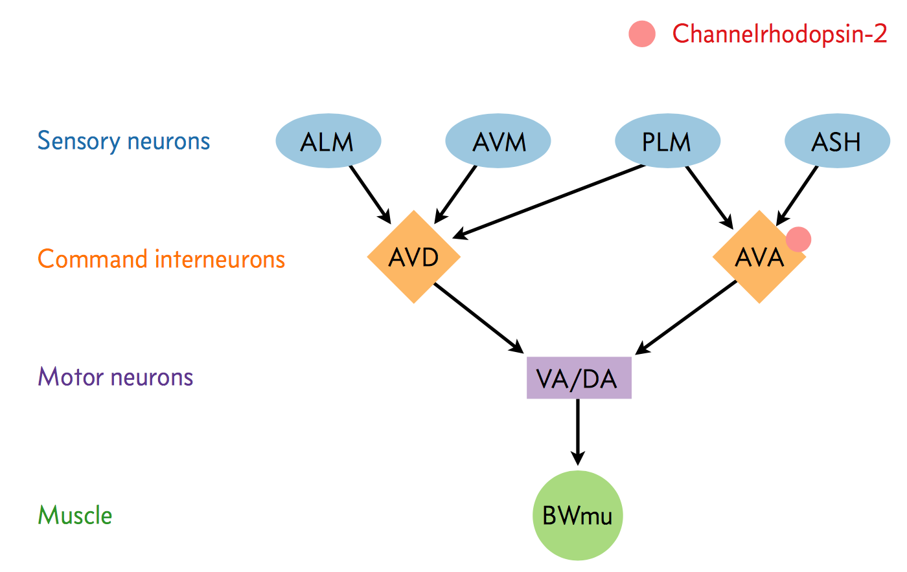

Exercise 6.1: Modeling and parameter estimation for Boolean data
In this problem, we will work with data of the True/False type. Lots of data sets in the biological sciences are like this. For example, we might look at a certain mutation in Drosophila that affects development and we might check whether or not eggs hatch.
The data we will use comes from an experiment we have done for the last few years in Bi 1x here at Caltech. The experiment was developed by Meaghan Sullivan in collaboration with Ravi Nath. Sophie Walton further developed strains that were used in the 2019 experiment, which we study here. We studied a neural circuit in C. elegans using optogenetics.
A neural circuit is a series of interconnected neurons that create a pathway to transmit a signal from where it is received to where it causes a behavioral response in an animal. An example is the neural circuit involved in reversals in C. elegans. This circuit consists of three types of neurons: sensory neurons receive stimuli from the environment, command interneurons integrate information from many sensory neurons and pass a signal to the motor neurons, and motor neurons that control worm behavior, such as reversals.
There are six non-motor neurons acting in a circuit that responds to environmental cues and triggers a reversal, a shown in the figure below (based on Schultheis et. al. 2011). These include four sensory neurons (ALM, AVM, ASH, and PLM) and two interneurons (AVD and AVA). Each sensory neuron is sensitive to a different type of stimulus. For example, the sensory neuron we are studying (ASH) is sensitive to chemosensory stimuli such as toxins, while another neuron (PLM) is sensitive to mechanical stimuli (touch) in the posterior part of the worm’s body. The sensory neurons send signals that are integrated by the two command interneurons (AVA and AVD). Each sensory neuron can provide an impulse to the command interneurons at any time. In order for the command interneuron to fire and activate motor neurons, the sum of the stimuli at any point in time must exceed a certain threshold. Once the stimuli from one or more sensory neurons has induced an action potential in a command interneuron, that signal is passed to motor neurons which will modulate worm behavior.

In the experiment, we used optogenetics to dissect the function of individual neurons in this circuit. We worked with two optogenetic worm strains. The ASH strain has channelrhodopsin (ChR2, represented by a red barrel in the figure above) expressed only in the ASH sensory neuron. When we shine blue light on this strain, we should activate the ChR2, which will allow sodium and calcium cations to flow into the neuron, simulating an action potential. We want to quantify how robustly this stimulation will cause the worm to exhibit aversion behavior and reverse.
We also studied an AVA strain that has channelrhodopsin expressed only in the AVA command interneuron. Our goal is to quantify the effects of stimulating this neuron in terms of reversals compared to the ASH neuron and to wild type.
The True/False data here are the whether or not the worms undergo a reversal. Here is what the students observed in 2019, the last year we did this experiment.
Strain |
Year |
Trials |
Reversals |
|---|---|---|---|
WT |
2019 |
50 |
6 |
ASH |
2019 |
52 |
15 |
AVA |
2019 |
53 |
40 |
Our goal is to estimate \(\theta\), the probability of reversal for each respective strain.
a) Propose a generative model for worm reversals. It should include the parameter \(\theta\).
b) If possible, derive an analytical expression for the maximum likelihood estimate of \(\theta\). If you have the expression, compute the MLE for \(\theta\) for each of the three strains. If not, numerically compute the MLE for \(\theta\) for each of the three strains.
c) Compute confidence intervals for your estimates of \(\theta\).
d) Comment on the results and conduct any other analyses you think may help you understand the results of this experiment.